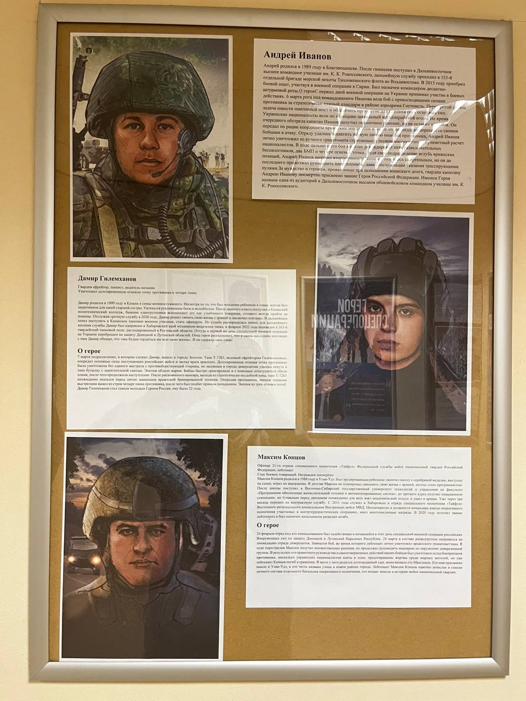

Родился в 1989 году в Благовещенске. После гимназии поступил в Дальневосточное высшее командное училище им. К. К. Рокоссовского, служил в 155-й бригаде морской пехоты Тихоокеанского флота во Владивостоке. В 2015 году получил боевой опыт в Сирии. Назначен командиром десантно-штурмовой роты.
С первых дней операции на Украине участвовал в боях. 6 марта рота под его командованием вела бой с превосходящими силами противника за важный плацдарм в районе аэродрома Гостомель. Иванов лично уничтожил из ручного гранатомёта вражеский пулемётный расчёт, передавал координаты целей, поднимал бойцов в атаку, получил ранения, но до последнего руководил наступлением. За мужество и героизм ему посмертно присвоено звание Героя РФ. Его именем названа одна из аудиторий Дальневосточного высшего общевойскового командного училища.
Родился в 1999 году в Казани. Несмотря на то, что был младшим ребёнком в семье, всегда был защитником для своей старшей сестры. Окончил Казанский политехнический колледж, отслужил срочную службу, затем заключил контракт. Служил механиком-водителем танка в 163-м гвардейском танковом полку.
7 марта подразделение, в котором служил Дамир, вышло к городу Золотое. Танк Т-72Б1 с ефрейтором Гилемхановым опередил основные силы наступающих российских войск и застал врага врасплох. Долговременная огневая точка противника была уничтожена без единого выстрела по днищу её амбразуры. Танк оказался перед пятью машинами вражеской бронетехники, уничтожил четыре из них. Дамир Гилемханов стал самым молодым Героем России: ему было 22 года.
Родился в 1988 году в Улан-Удэ. Окончил школу с серебряной медалью, играл на аккордеоне, мечтал стать программистом. Поступил в Восточно-Сибирский государственный университет технологий и управления, затем ушёл в армию и перешёл на контрактную службу. С 2011 года служил в Хабаровске в отряде специального назначения «Тайфун»; участвовал в контртеррористических операциях, имел многочисленные награды. С 2020 года — лейтенант и начальник разведки штаба.
24 февраля отряд под его командованием был задействован в начавшейся специальной военной операции. 24 марта он в составе разведгруппы вёл бой, в ходе которого лично уничтожил вражеского гранатомётчика. Получив множественные ранения, продолжал руководить манёвром по окружению диверсионной группы. Благодаря грамотному руководству были уничтожены склад боеприпасов, а взятые в плен спасли жизни мирных жителей. Лейтенант Концов погиб в сражении. Его именем названа улица в новом районе города.